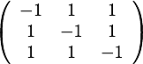

c(4x2) Si(001) surface


c(4x2) Si(001) surface

Here we shall construct a SIESTA input file for the calculation of the Si(001) c(4x2) reconstructed surface as a slab containing 2 dimer rows with 4 dimers in each in the upper layer; altogether there will be 6 layers; at the bottom we attach H atoms and the H atoms and the lowest two layers will be made frozen.
1. Start tetr and read in the Si bulk input file INPUT_FILE_Si_bulk.fdf for SIESTA.

2. Go to the M menu and preview the structure (the image on the left was obtained with Bb options -1 1, -1 1 and -1 1):
3. Now we need to construct the crystallographic extension of the unit cell which has the lattice vectors at right angles with each other. Si bulk represents a cubic crystal with fcc lattice, and hence the required extension matrix is (see, e.g. my book):


Current lattice vectors:
4. Once we have the crystallographic cell, then each surface termination can be easily built up using the Miller indices. However, if we would like to have the minimal possible size of the final cell, we have to proceed as follows. Firstly, redefine basic vectors of the bulk cell such that the 1st and the 2nd lattice vectors be within the required surface plane. Go to the Sr menu (right):
This is still a 2 atom cell (extension =1 as is seen above). However, the first two lattice vectors are in the required 001 surface plane. Leave this submenu with Q.
6. Then use Mi to specify Miller indices 0 0 1 after which the normal to the plane is calculated:

5. Use the option Su and enter elements of the above matrix; the new lattice vectors (shown below) are along the coordinate axes:

7. Finally, type CP to finish the construction: